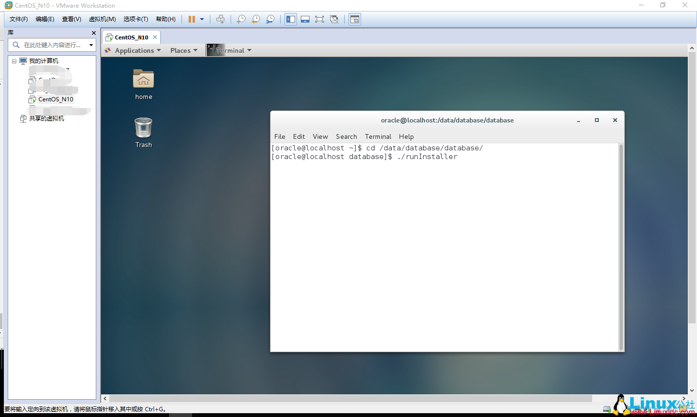
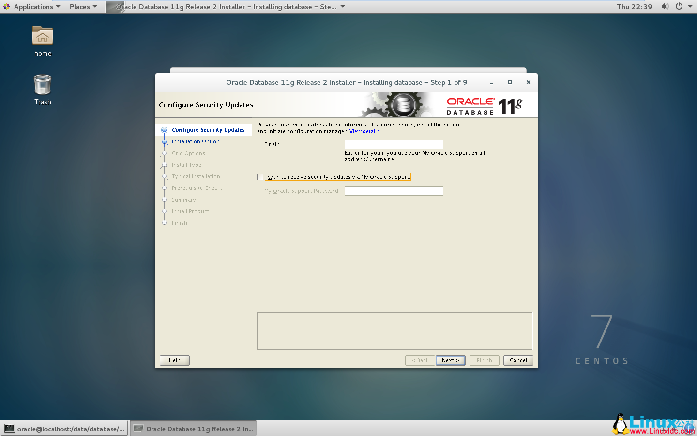
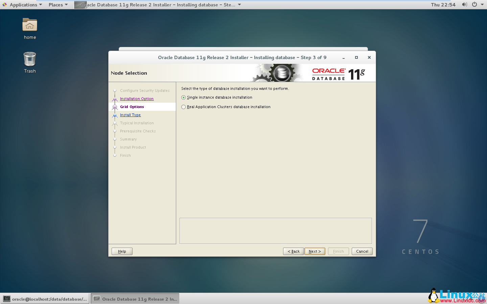
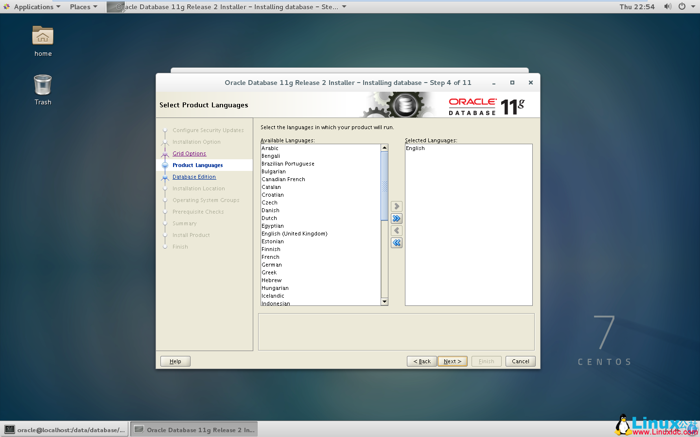
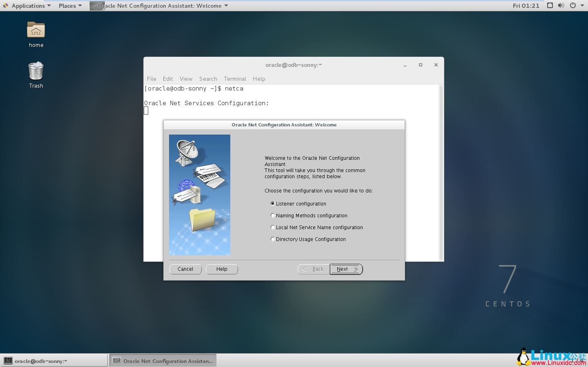

一、安装Oracle前准备
1.创建运行oracle数据库的系统用户和用户组
1 | [sonny@localhost ~]$ su root #切换到root |
2.创建oracle数据库安装目录
1 | [sonny@localhost ~]$ su root |
3.修改OS系统标识
oracle默认不支持CentOS系统安装，Oracle Database 11g Release 2 的 OS要求参考： https://docs.oracle.com/cd/E11882_01/install.112/e47689/pre_install.htm#LADBI1106
我安装是64位数据库，On Linux x86-64：Red Hat Enterprise Linux 7 （RHEL 7）
另外，CentOS7.0.1511 基于 RHEL7.2 参考：http://www.linuxidc.com/Linux/2015-12/126283.htm
修改文件 /etc/RedHat-release
1 | [sonny@localhost data]$ su root |
4.安装oracle数据库所需要的软件包
重复一遍，我安装时Oracle Database 11g Release 2 64位数据库。
Oracle Database Package Requirements for Linux x86-64 如下：（参考：https://docs.oracle.com/cd/E11882_01/install.112/e47689/pre_install.htm#BABCFJFG）
1 | 操作系统:Oracle Linux 7 and Red Hat Enterprise Linux 7 |
5.关闭防火墙 CentOS 7.2默认使用的是firewall作为防火墙
1 | $ systemctl disable firewalld |
6.关闭selinux（需重启生效）
1 | [root@localhost /]# vi /etc/selinux/config |
7.修改内核参数
1 | [sonny@localhost /]$ su root |
1 | 使配置参数生效 |
8.解压安装包
1 | [oracle@localhost /]$ cd /usr/local/src #进入/usr/local/src目录 |
二、oracle安装
1.图形界面登陆oracle用户：
备注：root用户切换到oracle用户无法安装报错，必须使用oracle直接登录，否则报如下错误
==Exception in thread “main” java.lang.NoClassDefFoundError==

2.启动oralce安装，到/data/database/database/目录下，执行runInstaller

3.去掉勾，懒得填，个人使用环境不需要自动接收Oracle的安全更新。

4.下一步，只安装数据库软件，个人用不要那些玩意~~
5.选择单例安装，前面的所有配置均为单例安装。

6.添加语言

7.默认安装版本企业版-Enterprise Edition
8.确定数据软件的安装路径，自动读取前面Oracle环境变量中配置的值。
9.理论上要创建Database Operation（OSOPER）Group:oper ,个人用，懒得建，就使用dba用户组
10.安装检查，按照提示信息一个一个解决。
11.一个一个检查package，在准备阶段中漏掉的，此处再安装，有些系统报错是因为现有的包的版本比检测要高，最后忽略即可。（点击Check_Again 多检查几次）
12.准备完毕，fuck “Finish”开始安装。
14.提示安装成功。安装日志懒得看，再说。
三、配置监听listener
1.执行netca 报错
1 | [@localhost ~]$ netca |
错误原因：安装操作系统是默认主机名localhost造成错误
解决办法：
1 | [racle]# cat /etc/sysconfig/network |
最后注销当前oracle用户，重新登陆即可！！这次发现打开配置界面正常，安装windows下面配置即可。

四、创建Oracle数据实例Orcl
执行dbca命令，启动oracle实例安装界面，剩下的与Windows上安装一样，不废话了：
注意：必须先创建监听，并且监听是启动中，否则报错。
问题总结
问题一：
root用户切换到oracle用户无法安装报错，必须使用oracle直接登录，否则报如下错误
Exception in thread “main” java.lang.NoClassDefFoundError
问题二：
Oracle 安装报错 [INS-06101] IP address of localhost could not be determined 解决方法
出现这种错误是因为主机名和/etc/hosts 文件不一致，只需要把主机名和其IP 写入/etc/hosts 文件，就ok了。
问题三：
在ORACLE11G R2 安装ORACLE时出现以下错误：
[INS-08109] Unexpected error occurred while validating inputs at state ‘getOCMDetails’.
经GOOGLE看到
http://www.linkedin.com/groups/I-try-clone-oracle-grid-77941.S.38808726
说是使用了 LD_LIBRARY_PATH 环境参数，经查看.bash_profile ，有如下设置：
LD_LIBRARY_PATH=$ORACLE_HOME/lib:/lib:/usr/lib; export LD_LIBRARY_PATH
注释掉后，问题解决。
问题四：
“#Error in invoking target ‘install’ of makefile ‘/data/oracle/product/11.2.0/db_1/ctx/lib/ins_ctx.mk’”
解决方法：打开一个新的终端，使用root身份登入，
#vi ORACLE_HOME/ctx/lib/ins_ctx.mk
找到
ctxhx: $(CTXHXOBJ)
$(LINK_CTXHX) $(CTXHXOBJ) $(INSO_LINK)
修改为(添加红色部分): ctxhx: $(CTXHXOBJ)
-static $(LINK_CTXHX) $(CTXHXOBJ) $(INSO_LINK) /usr/lib64/libc.a
问题五：
“#Error in invoking target ‘agent nmhs’ of makefile ‘/home/oracle_11/app/oracle/product/11.2.0/db_1/sysman/lib/ins_emagent.mk’”
解决方法：打开一个新的终端，使用root身份登入，
#vi $ORACLE_HOME/sysman/lib/ins_emagent.mk
找到
$(MK_EMAGENT_NMECTL)
修改为(添加红色部分)：
$(MK_EMAGENT_NMECTL) ==-lnnz11==
完成后在错误提示框上retry既可